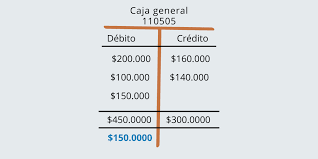

El tema que nos tocó es aprender a usar y manejar las Cuentas T. Aprender a organizar informacion y saber separar el IVA.
También vimos como manejar e identificar los tipos de IVA y el significado de cada uno
Vimos también como usar la página de la SAT para declarar impuestos.
